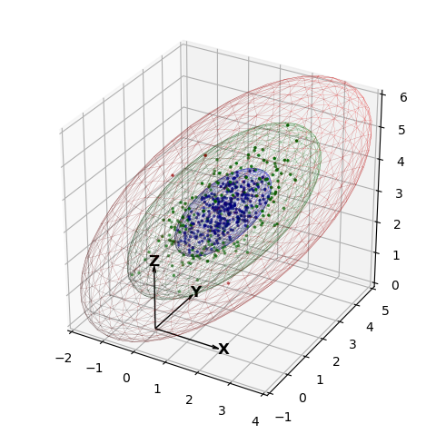

Standard Deviations¶
This example is similar to the Matplotlib example Plot a confidence ellipse of a two-dimensional dataset. Ellipsoids represent boundaries for one, two and three standard deviations.
import numpy as np
import matplotlib.pyplot as plt
from matplotlib import cm
import s3dlib.surface as s3d
#.. Confidence Ellipsoids
# 1. Define data to examine .........................................
np.random.seed(0)
def get_correlated_dataset(n, dependency, mu, scale):
latent = np.random.randn(n, 3)
dependent = latent.dot(dependency)
scaled = dependent * scale
scaled_with_offset = scaled + mu
# return x y z of the new, correlated dataset
return scaled_with_offset[:, 0], scaled_with_offset[:, 1], scaled_with_offset[:, 2]
corr = np.array([ [0.85, 0.35, 0.4], [0.15, -0.65, 0.6], [0.3, 0.7, 1.0] ])
mu = 1,2,3
sigma = .8,.5 , .7
N = 500
x,y,z = get_correlated_dataset(N, corr, mu, sigma)
data = np.transpose([ x,y,z ])
# 2. Setup and map surfaces .........................................
confEllipsoid_1 = s3d.SphericalSurface(3, color='b', linewidth=0.05 )
disArr_a,t = confEllipsoid_1.svd(data)
confEllipsoid_1.shade().set_facecolor([0,0,0,0])
confEllipsoid_2 = s3d.SphericalSurface(3, color='g', linewidth=0.05 )
confEllipsoid_2.transform(t[1],2*t[2],t[3])
confEllipsoid_2.shade().set_facecolor([0,0,0,0])
confEllipsoid_3 = s3d.SphericalSurface(3, color='r', linewidth=0.05 )
confEllipsoid_3.transform(t[1],3*t[2],t[3])
confEllipsoid_3.shade().set_facecolor([0,0,0,0])
colors_a = []
for val in disArr_a :
color = [0,0,.5]
if val>1. : color = [0.0,0.4,0.0]
if val>2. : color = [0.6,0.0,0.0]
if val>3. : color = [0.0,0.0,0.0]
colors_a.append(color)
# 3. Construct figures, add surfaces, and plot .......................
fig = plt.figure(figsize=plt.figaspect(1))
ax = plt.axes(projection='3d')
ax.set(xlim=(-2,4), ylim=(-1,5), zlim=(0,6) )
s3d.setupAxis(ax, 2, 1, negaxis=False )
ax.set_xticks( [i for i in range(-2,5)])
ax.set_yticks( [i for i in range(-1,6)])
ax.set_zticks( [i for i in range( 0,7)])
ax.scatter(x,y,z, c=colors_a, marker='.', s=10)
ax.add_collection(confEllipsoid_1)
ax.add_collection(confEllipsoid_2)
ax.add_collection(confEllipsoid_3)
fig.tight_layout()
plt.show()